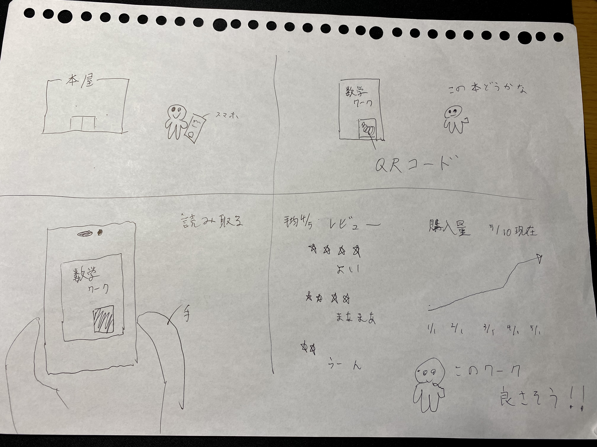

遠隔で操作、管理させることで、どのような新しいサービスが考えられるか？
グループワークした内容
QRコードを使ったものが多く上がりました。QRコードを使って出席確認や
レストランにおいて、メニューに張られたコードで注文する等。
アイデアスケッチ

これは本屋や図書館で気になる本があったとき、本に貼られている QRコードを読み取れば
本のデータサイトに飛び、ビューや売れ行き等の情報を見ることができるものです。
XBPトップページ